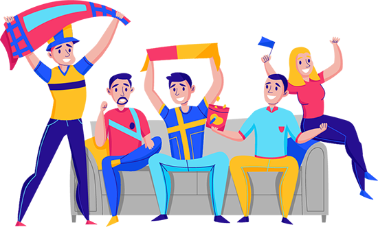

<div class="banner-page team-carousel" id="home-page">
    
</div>
<div class="pantau">
    <h1 class="white-color center-align">Ayo!! pantau terus tim liga favoritmu!!</h1>
    
    <svg xmlns="http://www.w3.org/2000/svg" viewBox="0 0 1440 320"><path fill="rgb(109, 3, 109)" fill-opacity="1" d="M0,64L30,80C60,96,120,128,180,165.3C240,203,300,245,360,256C420,267,480,245,540,229.3C600,213,660,203,720,186.7C780,171,840,149,900,170.7C960,192,1020,256,1080,272C1140,288,1200,256,1260,245.3C1320,235,1380,245,1410,250.7L1440,256L1440,320L1410,320C1380,320,1320,320,1260,320C1200,320,1140,320,1080,320C1020,320,960,320,900,320C840,320,780,320,720,320C660,320,600,320,540,320C480,320,420,320,360,320C300,320,240,320,180,320C120,320,60,320,30,320L0,320Z"></path></svg>
</div>